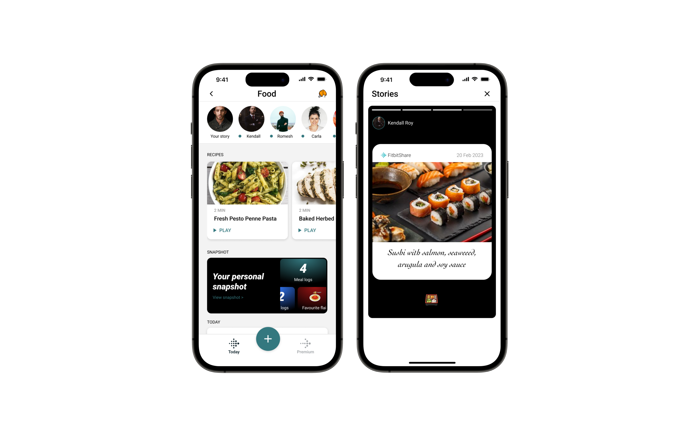
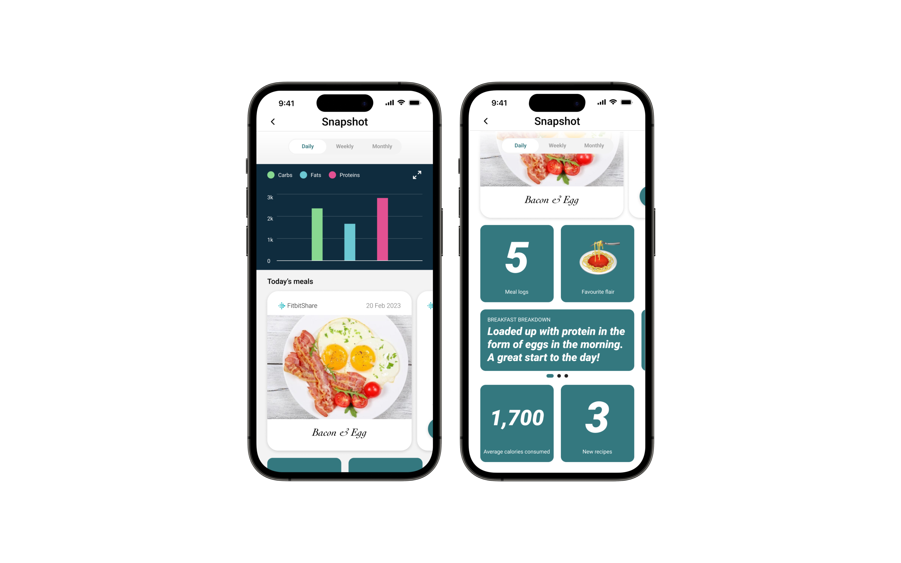

Track to Thrive: Redesigning Fitbit's Food Feature
Simplifying the process of tracking meals to help you log, improve and succeed in your health journey by designing for behaviour change.
Through research and ideation with a focus on behaviour change, four features were designed to enhance user experience of Fitbit's food section. These were AI-based food recognition, Smart Cookies, Snapshot, and Story sharing. Usability testing demonstrated that the features significantly simplified the process of tracking food, improved end-of-day reflective tracking, and provided personalized statistics and recommendations for healthier food choices. Future improvements include enhancing the visibility of the Smart Cookies feature and strengthening its association with the reward system, implementing gamification aspects, and improving the snapshot feature's interface and layout.
Role
UX Researcher and Designer
Research Methods
Semistructured discovery interview,
Croowdsourcing,
Affinity mapping,
Systematic brainstorming,
SUS based descriptive qualitative analysis, Kano Analysis
Course
Interaction Design Methods | Prof. Phil Jordan & Prof. Sai Shruthi Chivukula
Context
- Meals affect the every aspect of one’s life from their mental and physical well being to social interactions and quality of life.
- Keeping a track of all the meals one has had is laborious.
- Goals and outcome expectations from one’s meals vary from person to person.
- Keeping a log of foods consumed helps individuals develop a baseline for their eating habits, reflect upon their current behaviours and enact the changes they wish in an informed manner.
Primary Research
An interview protocol was developed as a team and semistructured interviews were conducted with partcipants (n=5; age group: 23 - 35) who had various levels of expertise with using health tracking applications. We initially went in with an open mindset and recorded information about food and physical activity tracking. Using Affinity Mapping (see figure below), we realised that food tracking is a task users struggle with the most, and a large part of staying healthy involved being able to control their diet. Thus, we narrowed our focus down to diet improvement.
Affinity map based on semistructured interviews with participants
While the affinity mapping helped us narrow down to designing a solution in diet improvement space, we still did not know what kind of improvements users would want to make in their diets. We needed a larger sample size to understand the core problem. So we decided to crowdsource problems. During a gallery walk session, we invited people nearby to help us with identifying problems by stating how they wished to improve their diet.
Dietary goals from crowdsourcing
Summary
Users had varying goals, ranging from just wanting to make a change in their weight to eating only certain macros. Some users were very knowledgeable about nutrition and dietary management, and other users less so.
1️⃣
Users believed a good diet would help them in all aspects of life
2️⃣
While dietary goals varied in responses collected, the common culprit was users not knowing what change to make in order to achieve said goal
Secondary research
Our secondary research aimed to understand why meal tracking applications had not been successful in the past. We reviewed several academic papers that conducted surveys on user perception of food logging apps. The findings of these studies revealed the following insights:
45%
Users felt it takes too long to enter the data
40%
Users felt the app did not hold their interest long enough
32.8%
Users found existing apps confusing to use
29%
Users wanted control over data sharing
36%
Users left app because of hidden costs like features hidden behind free-mium models
Target users
- Users who have tried tracking and found it cumbersome to log in food data.
- Users who wish to understand what ingredients they eat and maintain healthy diets.
In order to get existing users to regularly partake in the activity of logging their meals, we would need to design for behaviour change. We chose to use the Social Cognitive Theory (SCT) because of the use of self efficacy to improve adherence. One of the main talking points from our research was users giving up on tracking because of the high cost of involvement. Since we knew we had to address this barrier, SCT was the forerunner.
Social Cognitive Theory
Diagram of how Social Cognitive Theory brings about behaviour change
What is it?
The theory suggests that if the capability to change one’s behaviour exists, enabling self efficacy, making the recipient aware of the potential health outcomes, and reinforcing these two aspects will help achieve one’s behaviour goal.
Project Goals
üòå
Simplify meal logging
Reduce the barrier of entry to tracking the foods eaten in the course of a day.
üèÖ
Reward the activity of logging food
Reward users with informational tidbits about the food they logged to reinforce the outcome expectations.
üë•Ô∏è
Enable social engagement
Providing social proof, and using engagement to drive the motivation to log.
üßê
Reflect on food habits
Allow for a reflective analysis of foods consumed, giving the user agency in determining how they wish to modify their diet to meet their health needs.
Brainstorming
The brainstorming process involved two key objectives: 1) finding ways to simplify meal logging and 2) devising strategies to encourage users to consistently track their meals. Through various methods and approaches, our team worked to develop solutions that would streamline the process and increase user engagement.
Brainstorming on Miro
The structured brainstorming allowed us to weed out irrelevant ideas. The final user flow captured the most critical aspects of the design and provided a clear and coherent path for our design.
Final Design
Improving self efficacy
Simplifying meal logging
To improve self efficacy, the act of logging in any food a user wanted to input had to be simplified. The user can log food via camera, audio or text. The goal is to get the user to just log food without trying to be precise in order to reduce the barrier to entry.
Improving self efficacy
Camera + AI image recognition
The user can quickly log food using the camera. Through AI image recognition, the food is identified. If done correctly, the user can confirm this and log the food. Else, they can type the name of the food which can then be used to train the algorithm. The log contains both the image and the name in text.
Improving self efficacy
Voice notes + Speech to text
Alternatively, the user is able to log their food by recording a voice note which gets transcribed. The log contains both the transcription and the voice note.
Improving self efficacy
Text input with Quick Add
In order to reduce the barrier to entry for text input of food, we eliminated some of the tasks other food tracking apps record. The user here only needs to input the food they ate, not the quantities, or any specifics. This should allow the user to use the app as a sort of journal.
After logging their food, the user is provided the option to share the post with their friends on Fitbit. To tag the food, the user is prompted to select a flair.
Motivation through managing outcome expectation
Informational rewards
A rewards system that’s fun and educational!
Incorporating nutritional and health-related information in the form of ‘Smart Cookies’, adds an element of interest and entertainment. Users may find learning new things about nutritional value or health benefits engaging, which can enhance their overall experience while providing tips and tricks to improve their habits.
Motivation through managing outcome expectation
Social engagement
Encouraging users to share their stories can be a motivating factor in logging their food, as it fosters a supportive community. Sharing stories can also provide inspiration to continue engaging in the behavior.

Motivation through managing outcome expectation
Reflection
A rewards system that’s fun and educational!
The Snapshot provides a visual record of their meals as well as offers daily weekly and monthly statistics on the consumption of macro-nutrients. This enables the user to to reflect on their behaviors, identify patterns in their diets and make informed decisions.

You can interact with the Figma Prototype here.
Results
Usability Testing
üçï
Food logging
All users chose to log in using the camera function, thought it as very simple way of doing things.
ℹ️
Smart cookies
Users like the fact that its informational, useful and fun, but had trouble recognizing it and associating it with nutritional knowledge.
üë©‚ÄçüíªÔ∏è
Social engagement
Users may not use the feature and share stories themselves, but like to look at others’ stories.
üéû
Snapshot
Central to the app, and most important feature for all user, most users found it clear, concise and useful.
Takeaways
- Cookies feature is useful but needs improvements.
- Users love looking at their data!
- Even if users do not directly engage with others through stories they find it useful to stay motivated.
- Accuracy of AI image recognition could be potential pain point.
Future Scope
Improve the number of details that a user can input without losing on the benefits of the lowered barrier to entry.
Smart cookies was an integral part to reinforcing outcome expectations, but did not meet expectations during usability testing. Taking a call on whether this is to be improved or canned will need greater research and is a decision we have yet to make.
Social stories was seen as a good motivator, but did not fulfil some user needs such as being able to get the recipes for the foods shared. Explorations regarding incorporating said features need to be conducted.
Projects you might be interested in
POAKme
POAKme is a solution that enables individuals with Osteoarthritis of the Knee access care and rehabilitation from their homes.
Built with ‚ù§Ô∏è & ü•≤ from Bloomington, IN | ¬© Avyay Ravi Kashyap | 2023